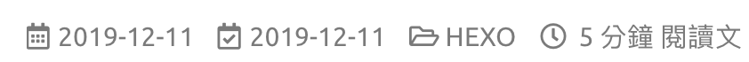

前言
在用主題模板的時候，總有些時候會覺得網頁版面怪怪的、不盡人意的地方，那要怎麼改呢？
這邊列出了我對Icarus主題的改動地方，這篇的東西都是參考下列網址：
https://www.alphalxy.com/2019/03/customize-icarus
https://dp2px.com/2019/06/04/icarus-theme/
https://github.com/ppoffice/hexo-theme-icarus/issues/379
然後我這邊不是全部採用，而是選取部分內容時做到我的網站上，不過話說前頭，本人不是專業的前端工程師，所以大部分內容都只是參考一下就直接照抄，如果對本文內容不夠滿意的話，建議可以直接去看上面的網址內容。
佈局
Icarus的主題默認上是三欄式網頁佈局，不過這個模式在瀏覽文章的時候總會覺得版面有些太滿，所以這邊我將閱讀文章的佈局改成兩欄式的佈局。
文章佈局-兩欄式佈局
打開includes/helpers/layout.js找到下面紅字那行替換成綠字那行，記得不要複製到+號：
1 | const widgets = hexo.extend.helper.get('get_config').bind(this)('widgets'); |
2 | - return widgets.filter(widget => widget.hasOwnProperty('position') && widget.position === position); |
3 | + if (this.page.layout !== 'post') { |
4 | + return widgets.filter(widget => widget.hasOwnProperty('position') && widget.position === position); |
5 | + } |
6 | + if (position === 'left') { |
7 | + return widgets.filter(widget => widget.hasOwnProperty('position') && (widget.type === 'toc' || widget.type === 'profile')); |
8 | + } else { |
9 | + return [] |
10 | + } |
這邊可以注意到page.layout是頁面的類型，當他是'post'時代表當前是文章閱讀的模式，當然你也可以針對其他頁面去做調整，像是index代表首頁、tag代表標籤頁。
詳細的網頁類別可以點這裡查到。
if (position === 'left')這段代表的是小工具載入的位置，你也可以設定成'right'來讓你後續要載入的小工具展是在右邊。
後面的widget.type代表的是要列在上面指定位置的小工具，可以透過||來增加你想展示的小工具。
接下來因為兩籃式佈局跟三欄式佈局整體的寬度不一樣，所以要調整layout/common/widget.ejs這個檔案：
1 | <% function side_column_class() { |
2 | switch (column_count()) { |
3 | case 2: |
4 | - return 'is-4-tablet is-4-desktop is-4-widescreen'; |
5 | + return 'is-4-tablet is-4-desktop is-3-widescreen'; |
6 | case 3: |
還有這個檔案layout/layout.ejs：
1 | -<body class="is-<%= column_count() %>-column"> |
2 | +<body class="is-3-column"> |
3 | <%- partial('common/navbar', { page }) %> |
4 | <% function main_column_class() { |
5 | switch (column_count()) { |
6 | case 1: |
7 | return 'is-12'; |
8 | case 2: |
9 | - return 'is-8-tablet is-8-desktop is-8-widescreen'; |
10 | + return 'is-8-tablet is-8-desktop is-9-widescreen'; |
因為Icarus有針對響應式去做設計，所以要更改source/css/style.styl，針對不同螢幕寬度有相應的呈現：
1 | .is-2-column .container |
2 | max-width: screen-desktop - 2 * gap |
3 | width: screen-desktop - 2 * gap |
4 | + .is-3-column .container |
5 | + max-width: screen-widescreen - gap |
6 | + width: screen-widescreen - gap |
7 | @media screen and (min-width: screen-fullhd) |
8 | + .is-3-column .container |
9 | + max-width: screen-fullhd - 2 * gap |
10 | + width: screen-fullhd - 2 * gap |
11 | .is-2-column .container |
12 | max-width: screen-widescreen - 2 * gap |
13 | width: screen-widescreen - 2 * gap |
標題佈局-更新時間和icon
接下來新增文章標題的更新時間和標籤icon，更改layout/common/article.ejs：
1 | <% if (post.layout != 'page') { %> |
2 | <div class="level article-meta is-size-7 is-uppercase is-mobile is-overflow-x-auto"> |
3 | <div class="level-left"> |
4 | - <time class="level-item has-text-grey" datetime="<%= date_xml(post.date) %>"><%= date(post.date) %></time> |
5 | + <time class="level-item has-text-grey" datetime="<%= date_xml(post.date) %>"><i class="far fa-calendar-alt"> </i><%= date(post.date) %></time> |
6 | + <% if (post.updated && post.updated > post.date) { %> |
7 | + <time class="level-item has-text-grey is-hidden-mobile" datetime="<%= date_xml(post.updated) %>"><i class="far fa-calendar-check"> </i><%= date(post.updated) %></time> |
8 | + <% } %> |
9 | <% if (post.categories && post.categories.length) { %> |
然後要刪除source/js/main.js中的部分程式碼：
1 | - if (typeof(moment) === 'function') { |
2 | - $('.article-meta time').each(function () { |
3 | - $(this).text(moment($(this).attr('datetime')).fromNow()); |
4 | - }); |
5 | - } |
我這邊遇到了一個問題：在source/js/main.js找不到上面那段刪除，這邊猜測是要執行hexo g之後才會產生上面那段程式碼，如果找不到要刪除的程式碼，記得要去generate一次你的網站。
完成的模樣會像是這樣的狀況：
文章結尾佈局-修改tag展示
這邊在文章底部增加了一個hr，然後針對文章的預覽還有結尾加上了tag的icon，修改layout/common/article.ejs這個檔案：
1 | <% if (!index && post.tags && post.tags.length) { %> |
2 | + <hr style="height:1px;margin:1rem 0"/> |
3 | <div class="level is-size-7 is-uppercase"> |
4 | <div class="level-start"> |
5 | <div class="level-item"> |
6 | - <span class="is-size-6 has-text-grey has-mr-7">#</span> |
7 | + <i class="fas fa-tags has-text-grey"></i> |
8 | <%- list_tags(post.tags, { |
9 | class: 'has-link-grey ', |
10 | show_count: false, |
11 | - style: 'link' |
12 | + style: 'link', |
13 | + separator: ', ' |
14 | }) %> |
15 | </div> |
16 | </div> |
17 | </div> |
18 | <% } %> |
19 | <% if (index && post.excerpt) { %> |
20 | - <div class="level is-mobile"> |
21 | + <hr style="height:1px;margin:1rem 0"/> |
22 | + <div class="level is-mobile is-flex"> |
23 | + <div class="level-start"> |
24 | + <% if (post.tags && post.tags.length) { %> |
25 | + <div class="level-item is-size-7 is-uppercase"> |
26 | + <i class="fas fa-tags has-text-grey"></i> |
27 | + <%- list_tags(post.tags, { |
28 | + class: 'has-link-grey ', |
29 | + show_count: false, |
30 | + style: 'link', |
31 | + separator: ', ' |
32 | + }) %> |
33 | + </div> |
34 | + <% } %> |
35 | + </div> |
36 | <div class="level-start"> |
手機顯示優化
在使用手機瀏覽網站的時候，隱藏archive和tagcloud小工具，修改layout/widget/archive.ejs：
1 | -<div class="card widget"> |
2 | +<div class="card widget is-hidden-mobile"> |
layout/widget/tagcloud.ejs：
1 | -<div class="card widget"> |
2 | +<div class="card widget is-hidden-mobile"> |
當然，你可以在layout/widget/裡面找你想要隱藏的小工具，一樣套用上面的方式。
固定目錄
將文章的目錄固定在一個位置，不會隨著網頁的滾動而看不到目錄，這邊只需簡單的修改layout/widget/toc.ejs就可以了：
1 | -<div class="card widget" id="toc"> |
2 | +<div class="card widget column-left is-sticky" id="toc"> |
功能
接下來針對網頁的功能去做新增跟修正。
版權宣告
在layout/common/article.ejs新增：
1 | <div class="content"> |
2 | <%- index && post.excerpt ? post.excerpt : post.content %> |
3 | </div> |
4 | + <% if (!index && post.layout === 'post' && post.copyright !== false) { %> |
5 | + <ul class="post-copyright"> |
6 | + <li><strong>文章標題：</strong><a href="<%= post.permalink %>"><%= page.title %></a></li> |
7 | + <li><strong>文章作者：</strong><a href="<%= theme.url %>"><%= theme.author %></a></li> |
8 | + <li><strong>文章連結：</strong><a href="<%= post.permalink %>"><%= post.permalink %></a></li> |
9 | + <li><strong>發佈時間：</strong><%= post.date.format("YYYY-MM-DD") %></li> |
10 | + <li><strong>版權聲明：</strong>本博客所有文章除特別聲明外，均採用 <a href="https://creativecommons.org/licenses/by-nc-sa/4.0/deed.zh" rel="external nofollow" target="_blank">CC BY-NC-SA 4.0</a> 許可協議。引用請註明出處！ |
11 | + </li> |
12 | + </ul> |
13 | + <% } %> |
14 | <% if (!index && post.tags && post.tags.length) { %> |
然後增加css樣式，在source/css/style.styl新增：
1 | /* --------------------------------- |
2 | * Copyright |
3 | * --------------------------------- */ |
4 | +.post-copyright |
5 | + font-size: 1rem |
6 | + letter-spacing: 0.02rem |
7 | + word-break: break-all |
8 | + margin: 2.5rem 0 0 |
9 | + padding: 1rem 1rem |
10 | + border-left: 3px solid #FF1700 |
11 | + background-color: #F9F9F9 |
默認使用目錄小工具
正常在寫文章的時候，要啟用目錄的功能時，需要在meta資料中加入toc: true來開啟目錄小工具，不過大多數時候都會在文章中使用目錄，所以這邊讓他在默認的時候加入toc: true，修改includes/helpers/config.js：
1 | return defaultValue; |
2 | } else { |
3 | const property = readProperty(specs, configName); |
4 | - return property === null ? null : property[descriptors.defaultValue]; |
5 | + const result = property === null ? null : property[descriptors.defaultValue]; |
6 | + return (configName === 'toc' && this.page.layout === 'post' && result === null) ? true : result; |
7 | } |
footer顯示一組icon
在版權的地方有寫到採用CC BY-NC-SA 4.0，而CC BY-NC-SA 4.0的icon是四個一組，所以要讓在配置link.icon可以是一個數組的方式呈現。
修改layout/common/footer.ejs：
1 | <% } else { %> |
2 | - <i class="<%= link.icon %>"></i> |
3 | + <% for (let icon of (Array.isArray(link.icon) ? link.icon : [link.icon])) { %><i class="<%= icon %>"></i> <% } %> |
4 | <% } %> |
和includes/specs/icon_link.spec.js：
1 | icon: { |
2 | [required]: true, |
3 | - [type]: 'string', |
4 | + [type]: ['string', 'array'], |
5 | [doc]: 'Link icon class names' |
另外在_config.yml中修改成這樣：
1 | footer: |
2 | links: |
3 | CC BY-NC-SA 4.0: |
4 | icon: |
5 | - fab fa-creative-commons |
6 | - fab fa-creative-commons-by |
7 | - fab fa-creative-commons-nc |
8 | - fab fa-creative-commons-sa |
9 | url: 'https://creativecommons.org/licenses/by-nc-sa/4.0/' |
樣式
按鈕、背景顏色增加漸變
讓一些按鈕(例如profile中的文章、分類等)有陰影、漸變的效果，修改source/css/style.styl：
1 | .menu-list li ul |
2 | margin-right: 0 |
3 | + .menu-list a |
4 | + transition: background-color 0.3s ease-in-out |
5 | .menu-list a.level |
6 | display: flex |
區塊增加浮動效果
:hover時曾大陰影面積，增加動畫屬性ease-in-out，修改source/css/style.styl：
1 | .card |
2 | border-radius: 4px |
3 | box-shadow: 0 4px 10px rgba(0,0,0,0.05), 0 0 1px rgba(0,0,0,0.1) |
4 | + &:hover |
5 | + box-shadow: 0 6px 15px rgba(0,0,0,0.15), 0 0 1px rgba(0,0,0,0.1) |
還有source/js/animation.js：
1 | element.style.transform = ''; |
2 | - element.style.transition = 'opacity 0.3s ease-out, transform 0.3s ease-out'; |
3 | + element.style.transition = 'opacity 0.3s ease-out, transform 0.3s ease-out, box-shadow 0.3s ease-in-out'; |
這樣修改能看到在滑鼠移到各個區塊的時候會有淡淡的陰影，可以更改上面數值讓他變得明顯或是淡化它。
結語
這篇是參考alphalxy這個網站上面的設置(並不是全都採用)，我在最上面也有留這個網站的連結，實作完之後版面的規劃跟細節，讓觀看的舒適度大大的增加也讓我比較順眼了。
如果你有找到更好的設置，歡迎留言給我，之後如果有其他有趣的功能會在實作後分享上來～